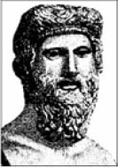
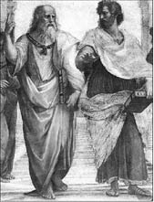

Platon (Eflatun)
Platon (Eflatun, MÖ 427-347)
“iyiyi, doğruyu ve gerçeği arayan kişinin ruhu arınır ve ölümsüzlüğe ulaşır.”
MÖ 427 yılında Atina’da doğan Eflatun, soylu bir aileden geliyordu. İyi bir eğitim aldı. Yirmi yaşında Sokrates’le tanıştıktan sonra onun ölümüne kadar sekiz yıl boyunca öğrencisi oldu. Hocası Sokrates’in öldürülmesi üzerine Atina’yı terk ederek Mısır başta olmak üzere pek çok ülke gezdi, gözlemledi ve 40 yaşlarında yeniden Atina’ya döndü.
Seçkin öğrenciler yetiştirmeyi planladığı okulunu, Atina’nın batısında adını Yunan kahramanı Academios’tan alan bir bölgede kurdu.
Eflatun’a göre filozof, aldatıcı görünümlerin ardına saklanmış olan mutlak bilgiyi, yani ideaların bilgisini yakalayabilen kişidir.
Eflatun’a göre felsefe ise, değişim içinde bulunan görüntülerin bilgisini bir yana bırakarak, hiçbir zaman değişmeyen ideaların bilgisine ulaşmaktır.
Bu düşünceye göre, insanlar bir mağaranın içinde yaşarlar ve yüzleri mağara girişinin karşısında bulunan duvara dönük olduğu için sadece buraya düşen gölgeleri görebilirler. Gerçeği görmek isteyen bir kimsenin başını mağaranın girişine çevirmesi ve orada geçit töreni yapmakta olan ideaları seyretmesi gerekir.
Bir toplantıda Eflatun’a sorarlar:
“İnsanlarda gözlemlediğiniz ve sizi en çok şaşırtan davranışlar nelerdir?”
Eflatun cevabını şöyle sıralar:
“Çocukluktan sıkılırlar ve büyümek için acele ederler, sonra çocukluklarını özlerler. Para kazanmak için sağlıklarını yitirirler, ardından sağlıklarını geri almak için para öderler. Yarından endişe ederken bugünü unuturlar, dolayısıyla ne bugünü ne de yarını yaşarlar. Böylece hiç ölmeyecek gibi yaşarlar, ancak hiç yaşamamış gibi ölürler.”
Bir konuşması sonunda birkaç kişi Eflatun’a sorar:
“Dostluk ve hayatla ilgili bize ne öğüt verirsin?”
Eflatun şunları söyler:
“Kimseye kendinizi sevdirmeye kalkmayın. Yapılması gereken tek şey sadece kendinizi sevilmeye bırakmaktır.
Hayatla ilgili ise, önemli olan çok şeye sahip olmak değil, en az şeye ihtiyaç duymaktır.”
Bir gün halk, meydanda toplanmış bulundukları durumdan yakınırken büyük filozofun oradan geçtiğini gören biri şunu sorar:
“Biz ne zaman mutlu olacağız?”
Eflatun yürüdüğü yoldan başını kalabalığa çevirerek “Toplumlar, filozofların kral ya da kralların filozof olduğu güne kadar, rahat ve huzur yüzü görmeyeceklerdir” diye cevap verir.
81 yaşında doğum günü olduğu sanılan bir günde hayata gözlerini yuman Eflatun, geride ve Sokrates’in Savunması başta olmak üzere çok sayıda eser bıraktı.

Solda Eflatun ve sağda öğrencisi Aristoteles, Ressam Raffaello Sanzio, 1509
Eflatun’dan...
“iyi bir konuşma insanın kafasına hâkim olma sanatıdır.”
(Mahkeme, yaptığı oylama sonucu Sokrates’i ölüme mahkûm eder.)
“Atinalılar!
Biraz daha sabretmediğiniz için, bilge adam Sokrates’e ölüm cezası veren şehrin kötü şanını yükleneceksiniz. Sizleri kötülemek isteyecek olanlar, bilge olmasam bile bilge olduğumu söyleyecekler.
Biraz daha bekleseydiniz bu iş kendiliğinden olacaktı. Yaşımı görüyorsunuz, zaten yaşamdan uzak, ölüme yakın yaşıyorum. Bu sözlerim hepinize değil, yalnızca beni ölümle cezalandıranlara.
Aynı kişilere şunu söylemek istiyorum: Beyler cezadan kaçınmak için elimden gelen her şeyi yapıp söylediğime inandığım için, sizleri yeterince ikna edecek sözleri söyleyemediğimi düşünebilirsiniz. Nedeni bu değildir beyler! Asıl nedeni, başkalarından duyabileceğiniz ağlamaları, yalvarmaları -fikrimce bana uymayan davranışları- sergilemediğim, yeterince yüzsüz ve küstah olmadığım içindir, ikna edici sözler söyleyemediğim için değil.
O zaman bile özgür bir insana yakışmayan bir davranışı tehlikenin varlığı yüzünden yapmazdım, şimdi de savunma şeklimden pişmanlık duymuyorum. Başka şekilde yaşamaktansa, bu savunmayla ölmeyi yeğlerim. Ne barışta ne savaşta ne de herhangi bir durumda bir kimsenin ölümden kaçmaya hakkı vardır.
Savaşlarda bile, herhangi bir kimsenin silahlarını bırakıp düşmana yalvararak ölümden kaçtığı görülmüştür. Bütün tehlikeli durumlarda, her türlü davranışı göze alan insan ölümden kaçabilir. Beyler ölümden kaçmak zor değildir, asıl zor olan kötülükten kaçabilmektir! Çünkü kötülük ölümden daha hızlı koşar.
Beni ise şimdi, yaşlı ve yavaş olduğumdan, ikisinden en yavaş olanı yakaladı. Beni cezalandıranları ise, güçlü ve tez canlı olduklarından, kötülük yakaladı. Ben ölüm cezası alarak gidiyorum, onları ise gerçekler, kötü ve haksız olarak yargılayacak. Doğal olarak ben cezama sadık kalacağım, onlar da. Belki böyle olması gerekiyordu, iyi de oldu.
İyi insan için kötülük yoktur, ne yaşarken ne de öldükten sonra.”
(Sokrates’in Savunması, Platon, MÖ 399)